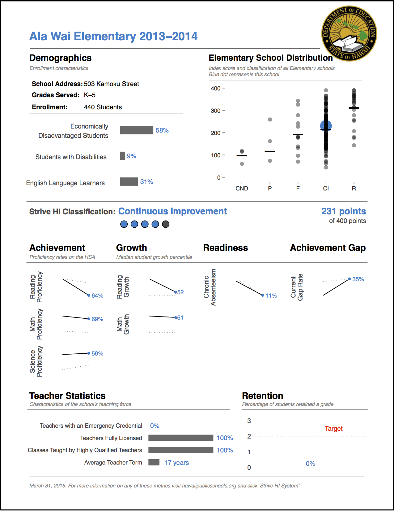

Public Report:
Data Visualization for Hawaii's Education
[Data Visualization] [R] [RStudio]
Project lead in Data Analysis and Visualization
Our data team at the Hawaii Department of Education (DOE) was tasked to tackle the large-scale project of creating customized reports for each of the 286 schools under the new policy framework, “Strive HI”. In previous years, the DOE had created unintelligible matrices of data. The new framework, however, required unequivocal transparency.
Routine discussions with department administrators explored how to best present information for better decision-making. I designed for simplicity without losing any critical information, as the report demanded consideration for a gamut of interested stakeholders—students, principals, community members, and non-profit organizations. We met with a vareity of principals as well as administrators from the Charter school network. It was rewarding to employ my technical skills grounded in a human-centered approach and collaborative environment.
I personally lead the development of producing comprehensive yet concise visualizations for each school. In previous years, the data team was limited in the tools available to them. Many were proficient with SAS and Excel but these contraints meant the inability to create a standardized template that could also be customized for each school. Given this limitation, the data team challenged me to learn the programming language, R, as no one else had working knowledge of this language. Having to manipulate large-scale assessment data tested my programming abilities. I cleaned, transformed, and merged structured and semi-structured data from various sources. To tackle the problem of suppressing sensitive data and ensuring absolute accuracy, I worked closely with the DOE branch tasked to evaluate our accountability system. The end product is what you see in the photos above--customized visualizations specific to each school and extensible for each year down the line.
“Draw it!” was a common recommendation given to me by the Strategic Data Fellow—the lead analyst for the Hawaii State Department of Education (DOE)—when I had trouble solving programming problems. The pithy declaration was meant to inspire me to think without any computational limitations. I especially applied this outlook of innovation to this very project. Working outside of the constraints of computatoinal limitations lead us to the overall success of the project.
{kind=link}
{kind=link}
{kind=link}
{kind=link}